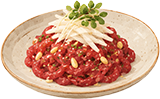
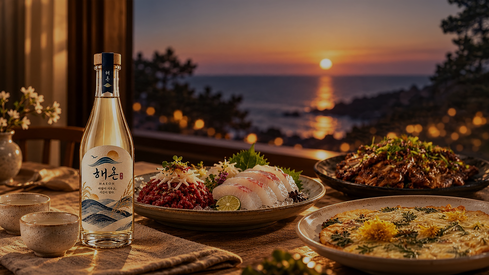
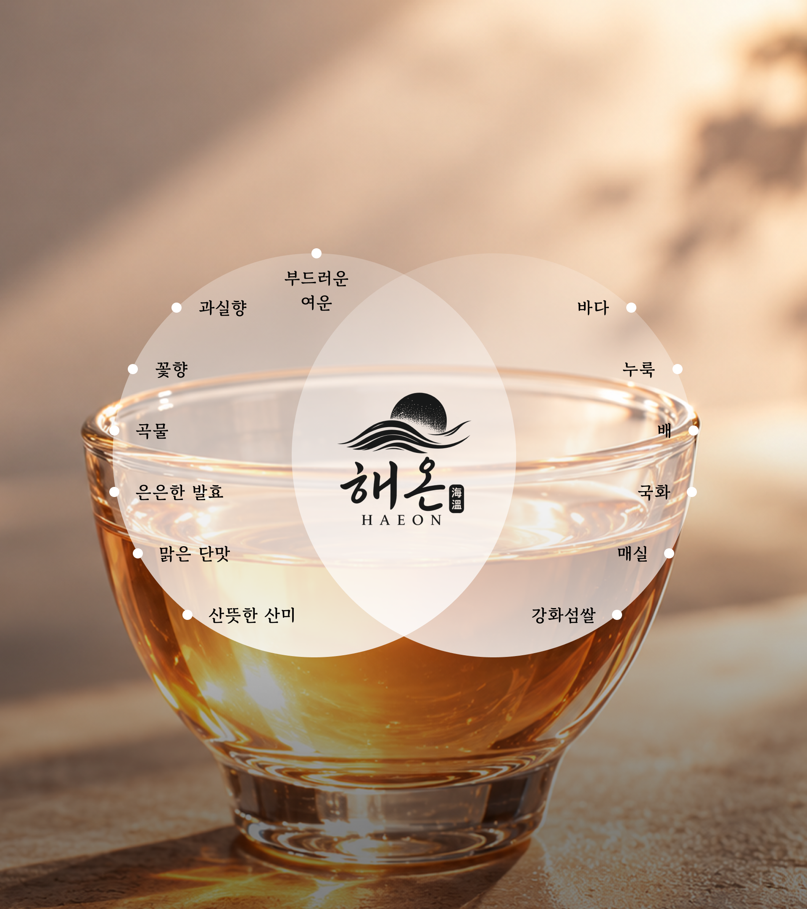
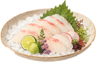
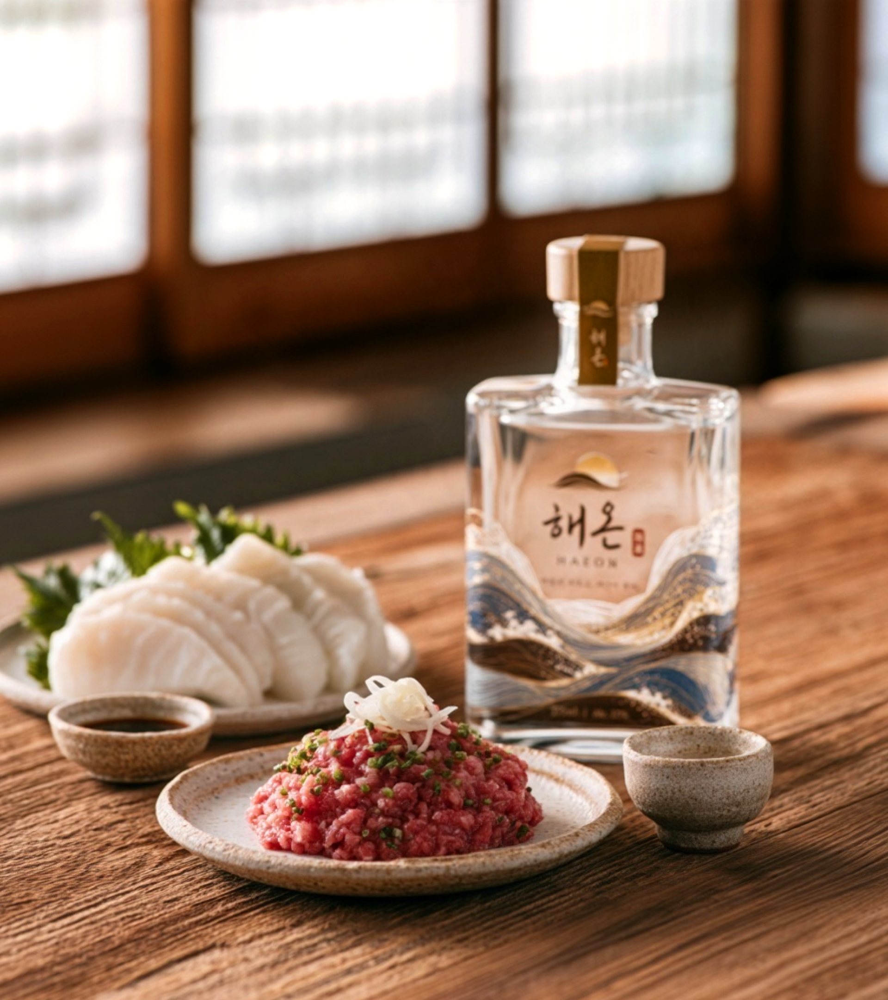
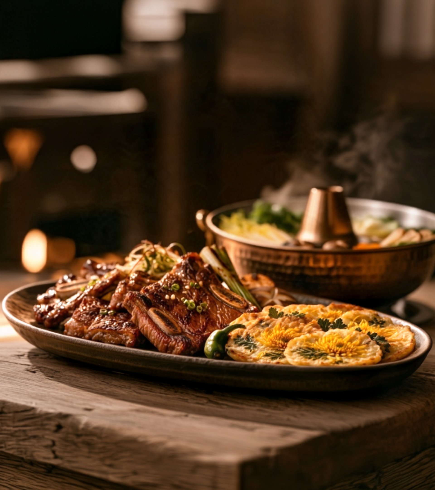
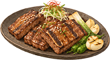
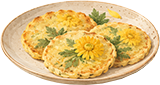

육회
배의 맑은 단맛
육회의 담백함과 강화도 쌀의 부드러움, 배의 맑은 향이 자연스럽게 이어집니다. 매실의 산뜻함은 입안을 깔끔하게 정돈합니다.


쌀의 부드러움 위에 배의 맑은 향과 매실의 산뜻함을 더하고,
국화와 누룩의 은은한 여운으로 완성한 술.
강화도 쌀의 포근한 곡물 단맛을 중심으로
맑은 과실향과 가벼운 산미, 차분한 꽃향과 발효의 깊이가 순서대로 이어집니다.
※ 실제 양조·관능평가 결과가 아닌, 원재료와 브랜드 콘셉트를 바탕으로 설계한 목표 풍미입니다.

육회의 담백함과 강화도 쌀의 부드러움, 배의 맑은 향이 자연스럽게 이어집니다. 매실의 산뜻함은 입안을 깔끔하게 정돈합니다.

도미와 광어 같은 흰살생선의 은근한 단맛을 배와 국화의 향이 살리고, 매실의 산미가 깨끗한 여운을 남깁니다.



맑은 육수와 소고기, 채소의 담백한 풍미에 해온의 섬세한 곡물향과 과실향이 편안하게 어우러집니다.
구운 고기의 짙은 육향과 누룩의 발효 풍미가 만나고, 매실의 산미가 기름진 여운을 가볍게 정리합니다.

국화의 은은한 꽃향이 전의 고소함과 연결되며, 해온의 쌀 단맛과 누룩의 깊이가 편안하게 이어집니다.
